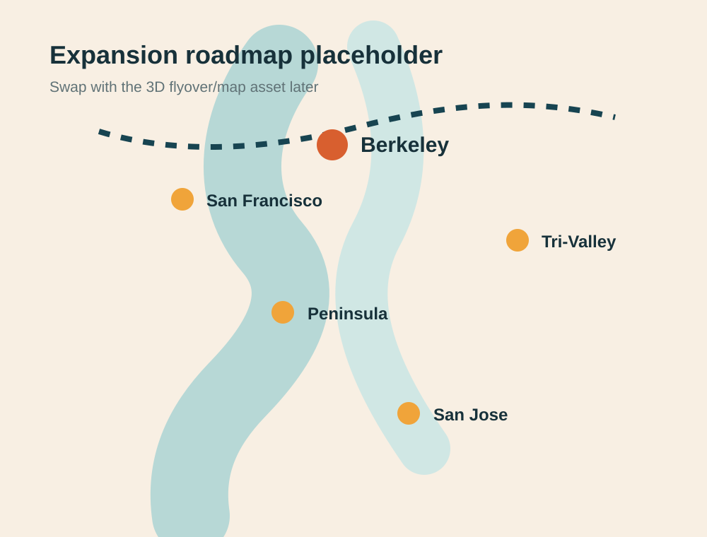

Social media outreach
Use existing digital reach to find, invite, and follow up with people across the Bay.
The vision page now makes the “how” explicit: digital outreach, regional pop-up services, campus ministry growth, and a phased roadmap from Berkeley outward.

Expansion roadmap
Use the existing 3D Bay Area flyover here as the centerpiece when the asset is ready.
Three pillars
Use existing digital reach to find, invite, and follow up with people across the Bay.
Give curious visitors a simple RSVP path and a clear next gathering to attend.
Build a student-centered ministry presence on Bay Area campuses starting in Berkeley.
Events / RSVP module
This module is ready to connect to a CMS or event tool later.